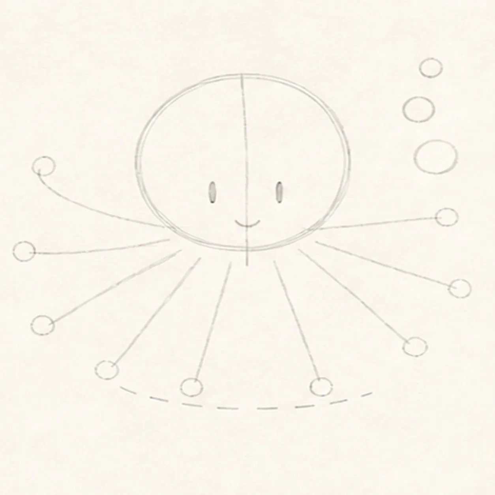
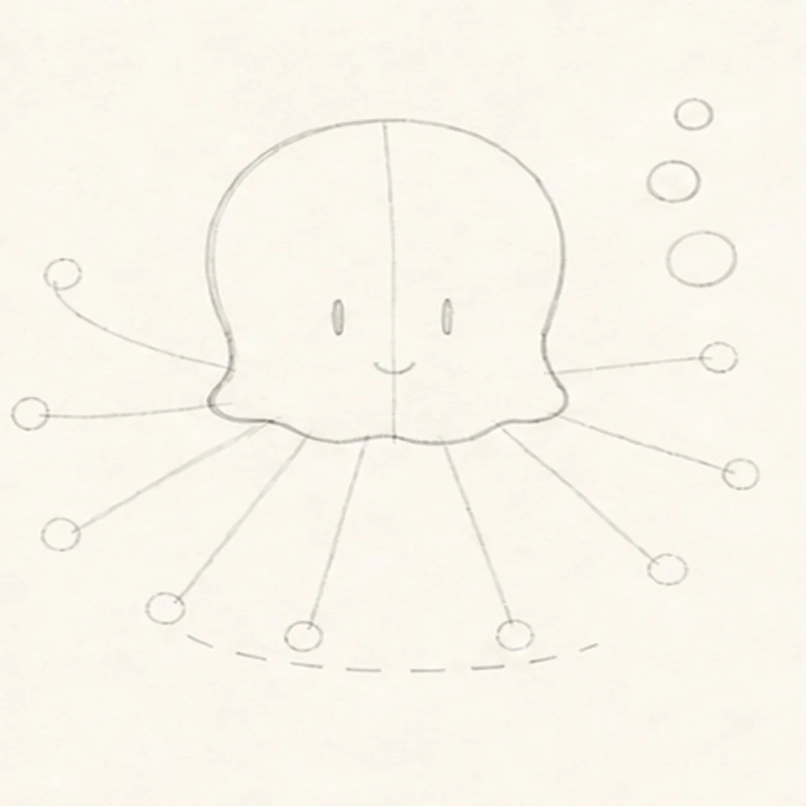
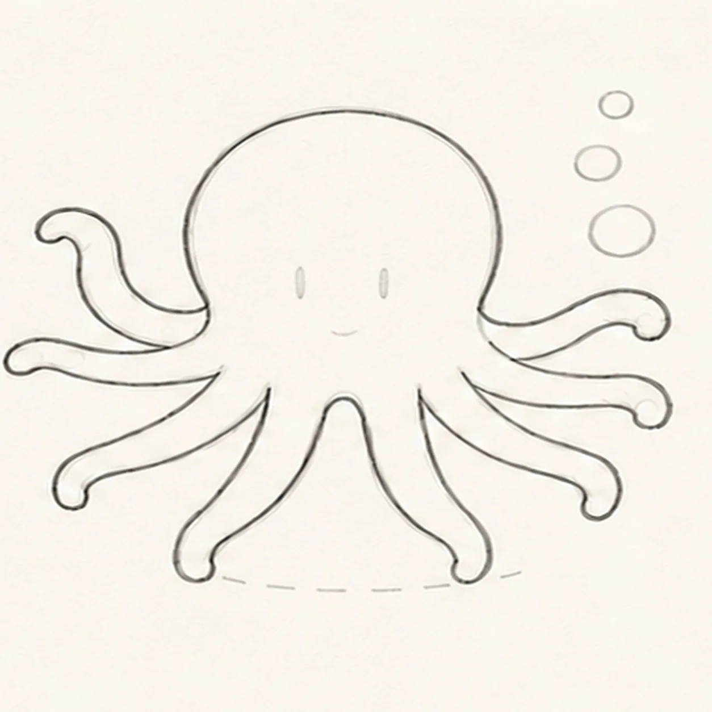
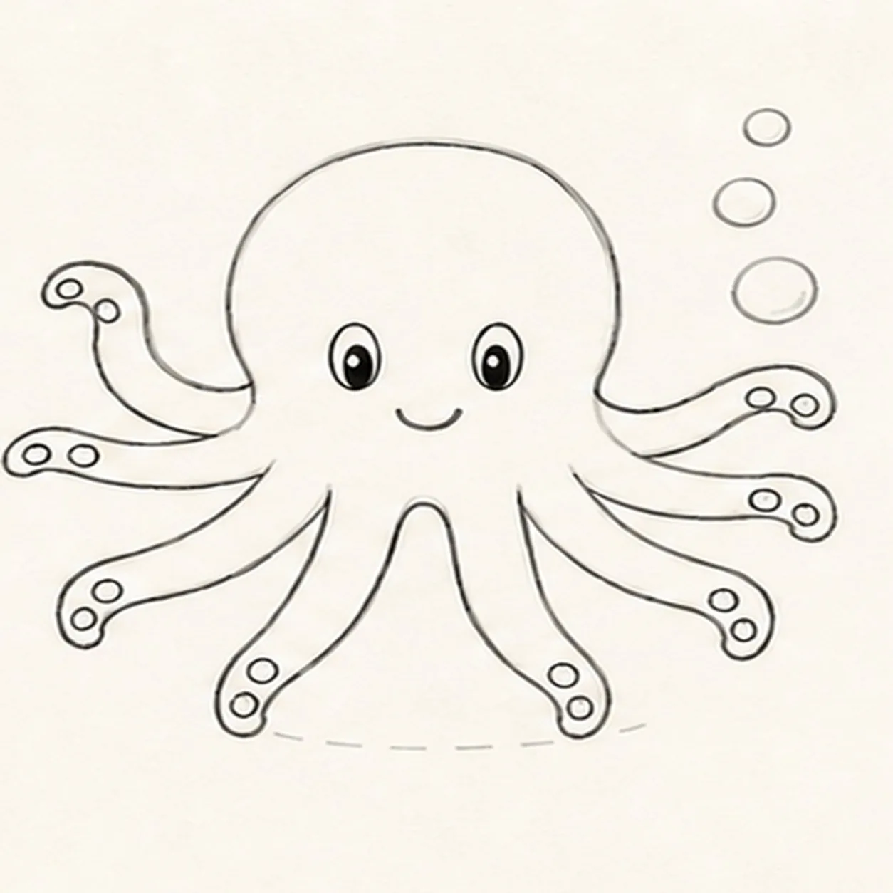
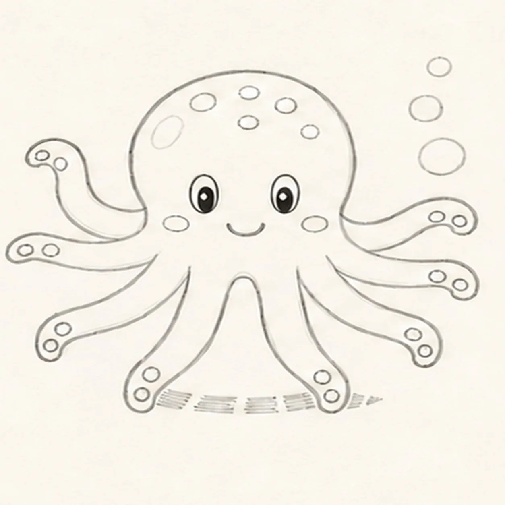
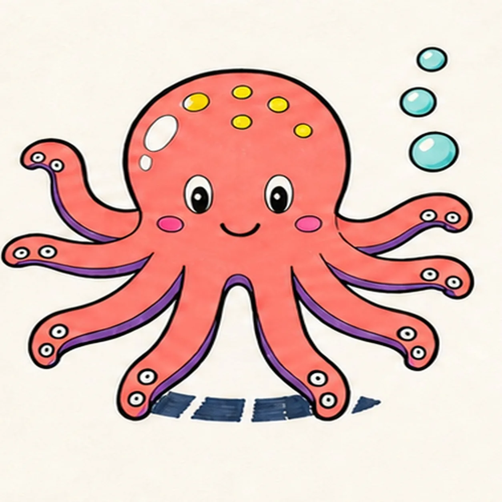
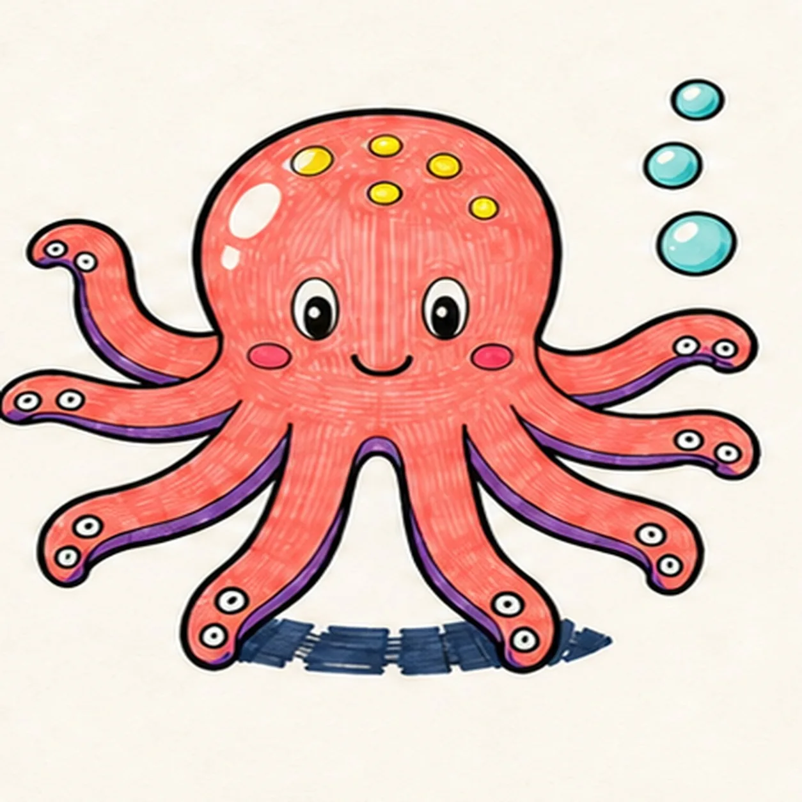

Felt-tip marker mode
Let's draw an octopus
Treat this as one playful practice round: sketch the idea loosely, simplify the shapes, then commit with confident marker outlines and bright fills.
-
01

Map the head and eight arms
Use pale pencil to place one round mantle guide, one face axis, exactly eight distinct arm routes, two eye ticks, one mouth tick, three bubble circles, and one broken shadow route.
Marker tip: Count the arm routes from left to right and make every endpoint visible. Fix the two front routes around the shadow now so the dark shape will stay behind them.
-
02

Shape the open mantle
Shape the rounded mantle top and sides, but stop both side contours at the arm-base anchors so the lower edge stays open around all eight pale routes.
Marker tip: Pull the upper mantle in two relaxed arcs, then lift the pencil at each arm-base anchor. Do not draw a wavy bottom line; the eight arm contours will close that silhouette in the next step.
-
03

Wrap all eight arms
Wrap every fixed route with one thick tapering arm, keeping exactly eight separate visible tips in the same left-to-right order.
Marker tip: Work around the fan one route at a time and count again at the end. Make each arm broad near the body and narrow at its tip without crossing its neighbor.
-
04

Add the face suckers and bubbles
Add two oval eyes, one cheerful smile, exactly two visible sucker circles on each of the eight arms, and exactly three bubbles at upper right.
Marker tip: Place the two suckers near each arm tip so the count stays readable. Check sixteen suckers as eight clear pairs rather than counting the whole page at once.
-
05

Reserve spots shine and shadow
Add exactly six mantle spots, two open-paper head highlights, two cheek marks, and the established broken shadow behind the front arms.
Marker tip: Keep the six spots above the eyes and leave both highlight shapes unfilled. Stop every navy shadow stroke at the front-arm edges.
-
06

Ink and map the ocean colors
Ink only established contours and map coral, purple, aqua, yellow, pink, and navy strokes in every planned region.
Marker tip: Ink the small suckers and face first, then rotate the page for the eight long arm curves. Leave visible fill gaps for the finishing pass.
-
07

Pull the marker texture
Clarify the established directional marker streaks, sucker rings, cheek accents, highlights, and shadow without adding any form.
Marker tip: Pull strokes from the mantle center down each arm. Use a second light pass only where the coral needs depth, and keep the paper grain visible.
-
08

Finish the cheerful octopus
Complete only the established marker fills, strengthen selected keeper contours, and clarify the same arms, face, suckers, bubbles, spots, highlights, texture, and shadow.
Marker tip: Count eight arms, sixteen suckers, three bubbles, six spots, two eyes, and two highlights, then stop. Seaweed, fish, shells, and lettering would make a different lesson.
![Handmade felt-tip marker drawing of one seated warm-brown cartoon capybara with one long blunt muzzle, exactly two tiny high-set rounded ears, one wide oval left eye, one half-lidded right eye under one raised brow, one blunt dark nose, one crooked closed smile, exactly six whisker dots, exactly two short forelegs and two paws holding opposite upper sides of one bright-orange fruit, exactly two visible hind feet, one teal leaf, exactly three fur-tuft groups at the head cheek and rump, one open-paper body highlight, one open-paper fruit highlight, exactly four orange dimples, coral cheek and inner-ear accents, thick imperfect black outlines, visible directional marker texture, and one broken deep-navy ground shadow](../assets/cartoon-capybara-holding-an-orange-finished-v1.webp)
![Handmade felt-tip marker drawing of one face-free upright cartoon hourglass with exactly two rounded teal caps, exactly two attached coral side pillars, one pale-aqua pinched glass vessel, one curved upper golden-yellow sand bed, one centered falling sand stream, one rounded lower sand pile, exactly two open-paper glass highlights, exactly three yellow four-point sparkles, exactly four deep-navy cap notches, thick imperfect black outlines, visible directional marker texture, and one broken deep-navy ground shadow](../assets/cartoon-hourglass-with-flowing-sand-finished-v1.webp)
![Handmade felt-tip marker drawing of one face-free upright teal cartoon walkie-talkie leaning slightly right with one top-left antenna, exactly two coral top knobs, one attached coral push-to-talk button on the upper-left side, one blank pale-aqua rounded screen with a dark bezel, exactly five horizontal deep-navy speaker slots, exactly two yellow radio-wave arcs above the antenna, exactly two open-paper case highlights, exactly four lower grip ribs arranged two per side, thick imperfect black outlines, visible directional marker texture, and one broken deep-navy ground shadow](../assets/cartoon-walkie-talkie-finished-v1.webp)